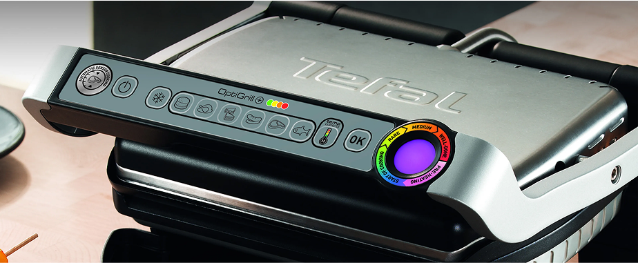

Электрогриль Tefal Optigrill+ GC712D34 — ваш надёжный помощник на кухне
Tefal представляет новый умный электрогриль — самый безопасный гриль в линейке бренда. Мы разработали ещё более удобную и надёжную модель: продуманная конструкция делает гриль простым в использовании, а интуитивно понятное управление позволяет готовить легко даже тем, кто никогда не пользовался такими устройствами.
6
автоматических программ для разных блюд
4
порции можно приготовить за один раз
2
года гарантии при покупке прямо сейчас
Купить Tefal Optigrill+ GC712D34
- — 6 автоматических программ для приготовления мяса, рыбы, овощей
- — 3-4 порции за одно приготовление
- — простое и понятное управление
- — пластины для жарки под наклоном
- — уникальный индикатор степени прожарки
- — гарантия 2 года + дополнительная 1 год на эту модель

До 1 августа действует специальная цена:
23 000 ₽ 19 990 ₽